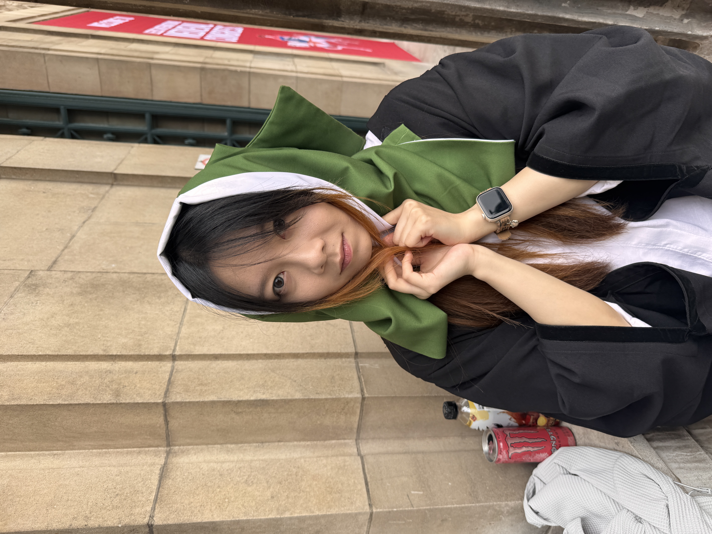
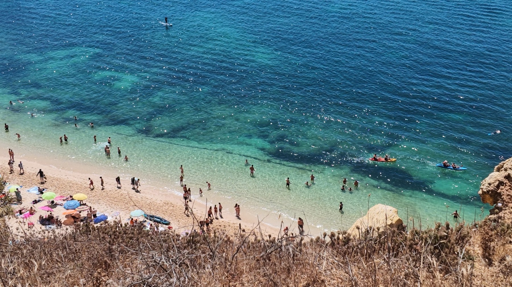
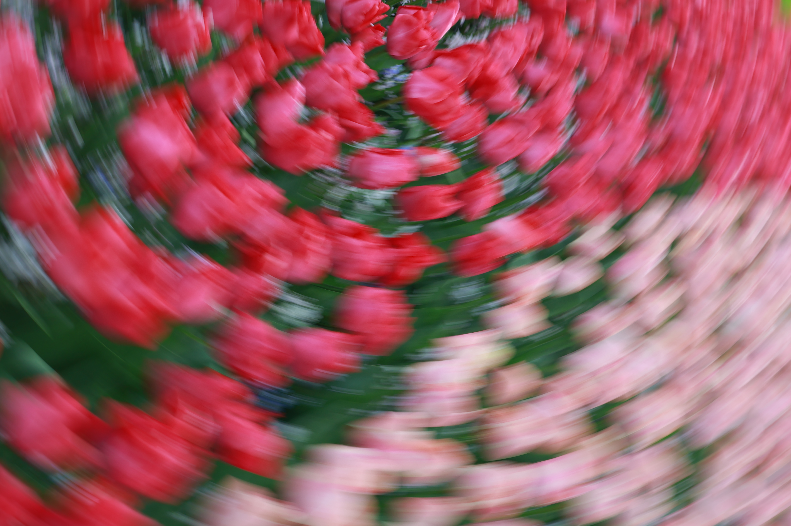
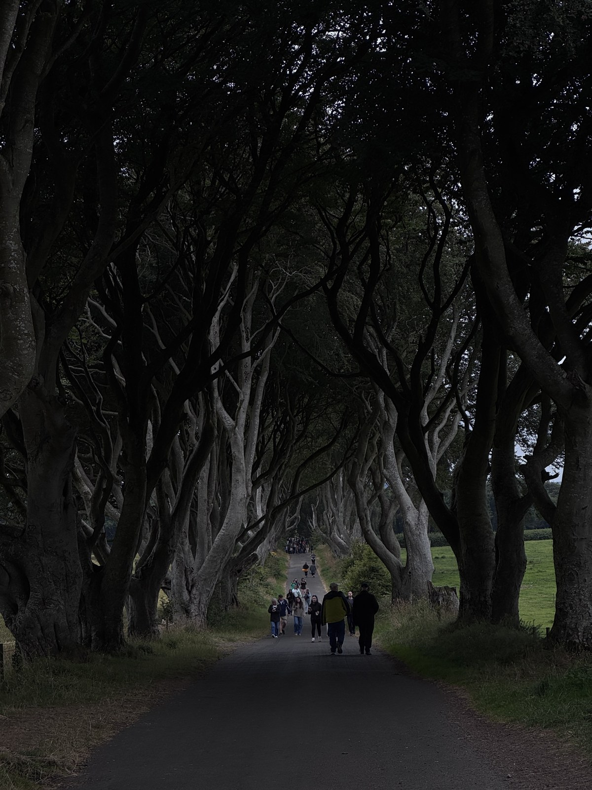

KE ZHANG / CONTENT · HUMAN CURIOSITY · AI EXPLORATION
我是张可。
保持好奇，
把想法做出来。
用镜头观察生活，用内容表达想法，也用 AI 探索新的可能。
从品牌内容与项目协作出发，我正在学习把一个问题，变成一个可以尝试的作品或工具。
市场营销与广告背景品牌内容与项目执行经历AI 共创 / 工具实践 / 持续学习
30 秒认识我 ↘下载简历 ↓
KE / IN REAL LIFEOBSERVE → QUESTION → CREATE → MAKE IT HAPPEN / 观察 · 提问 · 创造 · 推进
三个侧面，快速认识我。
THE SHORT VERSION / 30 SECONDSAI，打开了我的另一种可能。
CURIOSITY → EXPERIMENT → BUILD起初，我问它答案。
后来，我开始问：这个想法，能不能一起做出来？
我相信 AI 会成为未来生活与工作中不可或缺的一部分。吸引我的不只是回答有多快，而是它缩短了“我有一个想法”与“我能试着实现”之间的距离。
KE / EXPLORATION LOG持续探索中
起点 / 在内容工作中尝试 AI从“这是什么”，到“还可以怎样”。
早期，我会用 AI 查询资料、寻找解答。在曼思科技参与内容工作时，我也开始用它辅助修改脚本、拓展 campaign 创意，在已有内容上继续优化。这是我开始对 AI 产生兴趣，并把它用进实际工作的起点。
我的变化 / 从获取答案，转向追问可能。
01 / 你正在浏览个人网站
我提供自己的经历、照片与想法，寻找参考、提出交互需求，再与 AI 反复调整内容和页面。每一版都让我更清楚自己想表达什么。
看看共创过程 ↗02 / 从需求到工具求职投递管理
求职信息分散、进度难整理，于是我借助 AI 搭建了记录公司、岗位与进度的管理页面，让重复整理有了一个集中处理的地方。
我还想继续尝试 ＋
除了简历优化，我也在探索如何让 AI 辅助理解岗位要求、筛选适合自己的机会，再由自己判断是否匹配。
生活内容创作
与 AI 讨论脚本、拍摄剪辑方向和旁白，比较不同表达方式。生活的感受来自我，最后如何表达，也需要我自己选择。
看看我的创作尝试 ↗ 先扎根，再慢慢长高。
01 / HOW I GROW01 / 好奇不熟悉，也想试试看。
遇到一个新工具、一种表达方式，我愿意先动手摸索。查资料、拆步骤、做一个不太成熟的版本，再根据结果调整。这种从模糊到清晰的过程，让我想继续往前走。
02 / 共情多问一句，也多听一点。
我希望理解一个想法背后真正的需要：对方在意什么，信息有没有被准确表达，还有哪些视角没有被看见。共情对我而言，是持续练习倾听，而不是急着替别人下结论。
03 / 耐心允许自己，从不会开始。
我还在积累自己的代表作，也知道有些能力需要时间。面对不足，我更愿意把问题拆成今天能做的一步，虚心学习、反复练习，让每一次尝试留下可回看的痕迹。
我的小小实验田。
02 / LEARNING IN PUBLIC有些是工作中的实践，有些刚刚开始。我希望呈现的不只是完成品，还有理解问题、反复修改和继续尝试的过程。
EXPERIMENT 01 / 生活记录 × 从零尝试把快乐留下，
也给自己一个新的开始。
对我来说，记录生活有两种节奏：一种是留住当下的快乐，另一种是慢慢想清楚，我想怎样把自己的状态和想法分享出来。这两个账号，分别承载着这样的尝试。
01 / 原来的账号 · 生活存档记录生活，分享快乐。
这是我之前的抖音账号，是记录生活、分享快乐的地方。我想把它留在这里，让你看到我日常的一面，也看到内容创作开始之前，那份单纯想要分享的心情。
看看我的生活记录 ↗ 02 / 新注册的账号 · 从零探索重新开始，练习自己的表达。
这是我重新注册、想从零开始尝试的账号。我希望以生活记录呈现自己的状态，也分享当下的想法。创作从一个小问题开始：这段经历里，究竟有什么值得留下，又该怎样让别人理解？
在新的尝试中，我会与 AI 讨论脚本、拍摄剪辑方向和旁白，比较不同的表达方式，再做自己的选择。账号仍在探索中，内容和反馈也在逐步积累。
看看从零开始的尝试 ↗ 新账号：一段内容如何开始？
- 捕捉
从生活片段与自己的感受中寻找表达起点。
- 讨论
与 AI 讨论脚本、旁白和拍摄剪辑方向。
- 尝试
把想法带进拍摄、剪辑与发布，寻找适合自己的节奏。
- 回看
把公开表达当作学习的一部分，继续积累观察与反馈。
小红书：一块正在翻土的地方 ＋
我刚开始在小红书探讨和梳理自己的想法，目前还没有形成成熟的内容系列。我愿意保留这个起点，让它随着真实的尝试慢慢丰富。
EXPERIMENT 02 / 这个网站 × AI 共创从一个想法，
到自己的小小空间。
最初，我只是想做一个作品集。做到后来，我发现，更难的问题是：我想怎样介绍自己？
我不断寻找参考、比较方向，提出新的内容和交互想法，再根据看到的结果调整。后来我意识到，比起只列经历，我更希望这里能展示一个正在学习、愿意探索的自己。
小草的比喻、生活记录的方向，以及对自我状态的反思，来自我自己的想法。AI 协助梳理文案与实现页面；我持续提出需求、表达偏好、判断结果。它还在生长，我也一样。
翻开一次迭代
我想拥有一个可以展示经历、项目和摄影作品的个人网站。
这次我学着做的事
把“想要有创意”变成具体的内容和互动需求；看见一个版本与自己的距离；承认不满意，再清楚地说出怎样修改。
当前阶段 / 持续迭代，不以网站上线或已有功能证明技术熟练度。
做出一个版本之后，
我才知道该问什么。
我还没有很多成熟的作品。比起把每一次尝试都说成成果，我更想说明：哪里让我不满意，我为什么改，以及下一步还需要什么。
01 / 关于这个网站好看，是否也让人看懂？
最初，我想要创意和交互。看过几个版本后，我发现：如果别人需要读很久才知道我是谁，再多效果也没有解决表达的问题。
所以这次：把经历和实际尝试放到前面，让照片各自说明一种观察。交互负责吸引注意，内容还需要回答“为什么是我”。
02 / 关于 AI能做出来，是否等于理解了？
AI 让我能更快尝试网站和工具，但页面出现，不代表我已经理解了每一项功能。比如文件打不开、呈现与想象不一致，仍然需要具体地定位和调整。
我需要继续练习：把“感觉不对”说成清楚的问题，检查结果是否能使用，再判断哪些做法值得保留。
03 / 关于内容创作我想表达的，别人接收到了吗？
生活记录可以从自己的感受开始，但发布出去之后，别人未必有同样的背景和经历。脚本顺畅，也不代表情绪就一定能被理解。
接下来想做：每次先说清一个具体想法，再观察评论和反馈，比较自己想传达的与别人实际感受到的，而不急着用一条内容定义自己。
写给求职中的自己 ＋
求职让我看见自己还有需要补齐的能力，也提醒我，反馈未必只由个人水平决定。我希望把能做的部分落到具体行动：整理一次经历，完成一个小作品，再根据反馈修改。
我愿意承认自己还在起步。对我来说，耐心不是一直准备，而是做完一小步，留下问题，再继续下一步。
和别人一起，把事情做成。
01 / SELECTED EXPERIENCE品牌营销是我的兴趣起点，内容与项目执行是我的实践方式。以下结合简历与我的实际经历，呈现我怎样理解需求、使用工具，并与他人一起推进交付。
从三个侧面，认识我的做事方式从用户反馈发现内容机会，再把品牌信息转化为可执行的创意。
01 / BRAND & CONTENT · 2022.11—2024.01把品牌信息，
变成用户愿意看的内容。
曼思科技有限公司
新媒体运营 · 内容与项目执行
10万+参与运营账号粉丝规模
5万+运营期账号粉丝增长
3万+单条内容最高点赞
我的体会 / 创意要经过执行，才成为内容
AI 能让我更快看到不同表达，但一个创意是否适合品牌、是否能拍出来，仍然需要结合具体条件判断。这段经历让我开始理解：内容工作既需要想象，也需要耐心把细节接起来。
展开完整过程：需求 → AI 协作 → 执行 → 交付 ＋
01 / 理解需求 / 从品牌诉求出发
在曼思科技，我参与新媒体内容与项目执行。工作的起点是理解品牌想传递什么，再结合产品卖点和用户反馈，寻找适合短视频的内容切入点，参与探店、场景化和节日剧情等方向的选题与脚本优化。
02 / 创意优化 / 我使用 AI 的起点
在已有脚本和创意基础上，我们尝试借助 AI 修改表达，也为 campaign 寻找更多创意方向。对我而言，这不是从一张白纸直接得到成品，而是让已有内容多一些可比较、可继续修改的可能。这段经历，是我开始对 AI 产生兴趣、尝试把它用进工作的起点。
03 / 推进执行 / 让想法进入拍摄现场
内容方向之外，我还参与达人沟通、拍摄排期协调，以及场地、道具筹备和现场执行，跟进制作与交付。脚本需要与实际拍摄条件衔接；有想法之后，还需要通过这些具体环节，让不同的人知道接下来要做什么。
04 / 完成与回看 / 把反馈带回下一次内容
我参与跟进最终交付，也结合内容互动与直播反馈进行复盘。页面展示的账号数据，是参与运营期间的整体表现，不代表个人独立贡献，也不是 AI 使用效果的单独证明。
不同的背景，
共同的交付目标。
Practera Client Project — Pixie
真实客户咨询项目 · 跨文化团队组长
我的体会 / 拆解清楚之后，还要让人理解
AI 可以帮助整理复杂信息，却不能替我完成组员之间的沟通。我逐渐意识到，项目推进的关键不只是得到一份结构清晰的答案，还要让每个人理解自己负责什么，以及它与整体目标有什么关系。
展开完整过程：需求 → AI 协作 → 执行 → 交付 ＋
01 / 理解 brief / 先弄清客户要达成什么
在 Practera — Pixie 客户咨询项目中，我担任跨文化团队组长。我们借助 AI 对客户 brief 逐项拆解，明确其中希望达成的增长目标，让一份整体需求逐渐变成可以分别讨论的问题。
02 / 展开分析 / 从目标到具体内容
在拆解基础上，我们继续与 AI 协作，分析每一部分需要研究和讨论的内容，并结合市场与消费者分析推进策略思考。这个过程帮助我们组织思路，最终仍需要回到 brief，判断各部分是否回应了客户原本的需求。
03 / 团队沟通 / 把拆解变成可执行的任务
我将拆解和分析的内容与组员沟通，结合成员能力和任务优先级明确分工、责任与内部节点，持续跟进进度，并根据实际工作量调整。我的工作不只是分配任务，也包括协调不同文化背景成员的理解和观点，让各部分能够朝着共同的交付目标推进。
04 / 汇总交付 / 让分散的工作回应同一个问题
我们推进策略讨论与最终方案交付，在有限时间和人员条件下完成项目。简历记录的客户满意度为 100%。对我来说，交付的意义不仅是各自完成一部分，更是这些部分放在一起，能够回应同一份客户需求。
照片里，也有我看待生活的方式。
02 / THROUGH MY LENS我会被自然发生的幸福打动，也喜欢换个角度重新看熟悉的事物。有些画面来自眼前的生活，有些感受，则从看过的故事里延伸而来。

01 / 幸福，不必看向镜头我喜欢记录人们自然相处的片刻。没有刻意的姿势，生活也有值得留下的样子。
点击照片 · 阅读我的想法 ↗
02 / 换一种看法，花就不同旋焦让花朵的轮廓变得模糊，也让颜色与运动有了自己的表达。
点击照片 · 阅读我的想法 ↗
03 / 故事结束，感受还在延伸从《权力的游戏》里的熟悉场景，到眼前向深处延伸的树影，影视与现实在这里相遇。
点击照片 · 阅读我的想法 ↗摄影 / 张可 · 点击照片，进入我的观察笔记。
03 / ALWAYS IN EXPLORATION愿意从零学习，
也愿意把事情做完。
从商务英语，到媒体，再到市场营销与广告。不同阶段的学习，让我逐渐把对人、内容与商业的兴趣连接起来。
品牌与消费者内容创意项目推进跨文化协作摄影与探索
2025.09—2026.09 / 利兹大学
市场营销与广告专业
消费者行为 · 品牌管理 · 数字营销 · 市场研究2024.09—2025.09 / 考文垂大学
媒体专业
媒体制作 · 跨媒体叙事 · 创意内容制作2019.09—2022.06 / 四川大学锦城学院
商务英语专业 · 班长
组织班级活动，协调成员分工及师生沟通，所在班级获评“优秀班集体”。我的工具箱SPSS / 问卷设计与数据分析 / Premiere Pro / Photoshop / 剪映 / Excel / PowerPoint